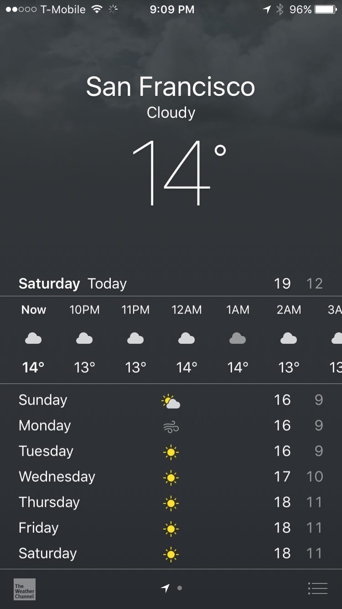

Friday, 1 April 2016 at 8:52 PM
Weekly Log #1
I’ve been in SF for a week, here’s a little blog post on what’s gone on so far. The 16-hour flight (with a 1-hour transit at Hong Kong) sounded scary, but it wasn’t too bad.
I’m on an internship in San Francisco, along with seven other students from my school.
Singapore’s weather is terrible

The weather here is really pleasant, but it gets too cold once the winds start blowing. It’s always cooler than Singapore though - the summer is forecast to be around 21°C (some of my colleagues think this is quite warm!).
Great views by default
We’re staying at this place called Cornerstone Academy. It’s located in San Francisco City and it’s got a terrific view of the surrounding houses. (Also, meet my roommate Jurvis!)
Muir woods
We went to the redwood forest. On the way, there were a lot of great scenery.
Nice views you won’t get in Singapore. Seriously, everything looks so good.
A large redwood tree. Lens flare from the sun by accident.
A view of the Golden Gate Bridge from far away. It links Marin Headlands and San Francisco city.
UserTesting
Two of my colleagues at UserTesting, James and Akshay! Everyone’s really nice and friendly. We haven’t gone through the official welcoming process called “Boot Camp”, which will happen next week. We were given some introduction to how the Engineering department worked and the tools they used.
We were also given access to some code repositories, and it was my first time seeing code on the Ruby on Rails framework, which is something I have to learn üòÑ.
Dinner with hosts
On Wednesday we had dinner with our hosts (Harry and Li Soon) and our teachers (Patrice and Darran) at Red Robin, a restaurant in San Bruno, CA. The serving sizes were quite huge - drinks and fries had complementary refills.
Here’s a shot of everyone - the eight of us, Harry, Li Soon and Darran. Patrice is out of the shot (he took the photo).